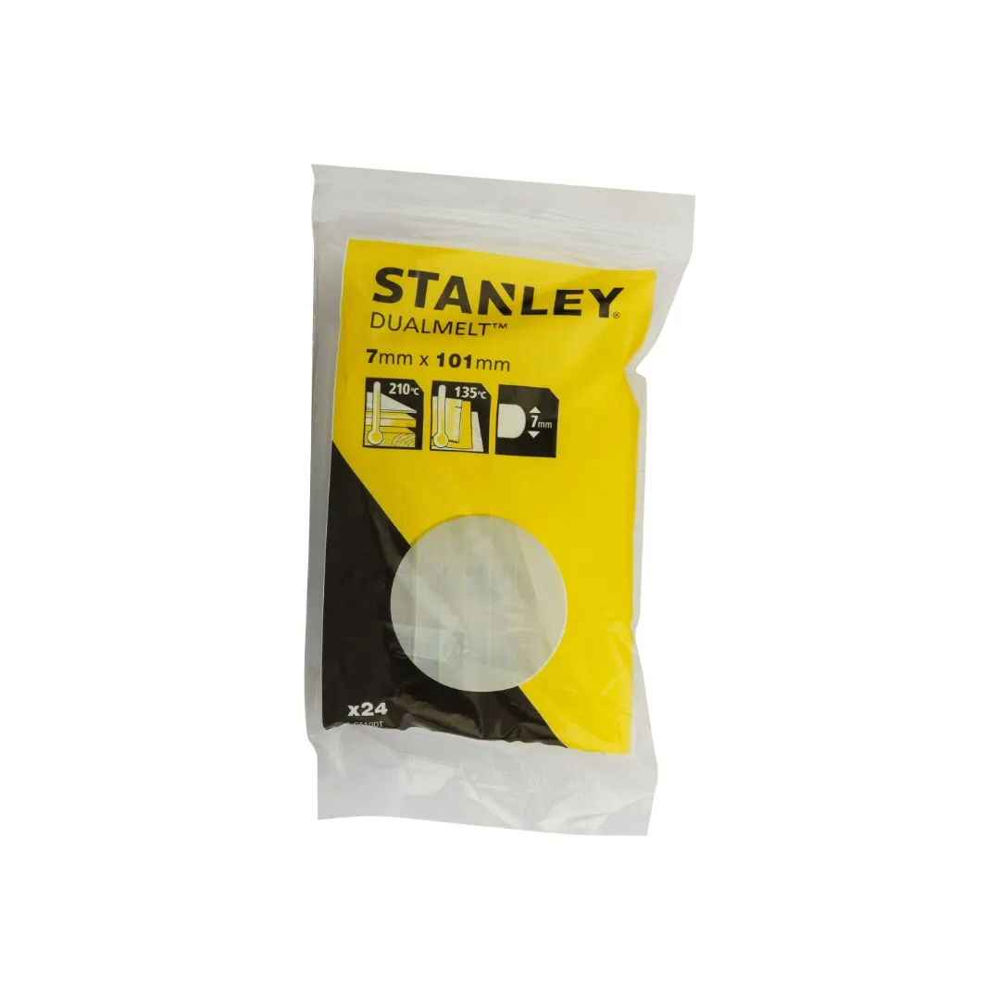
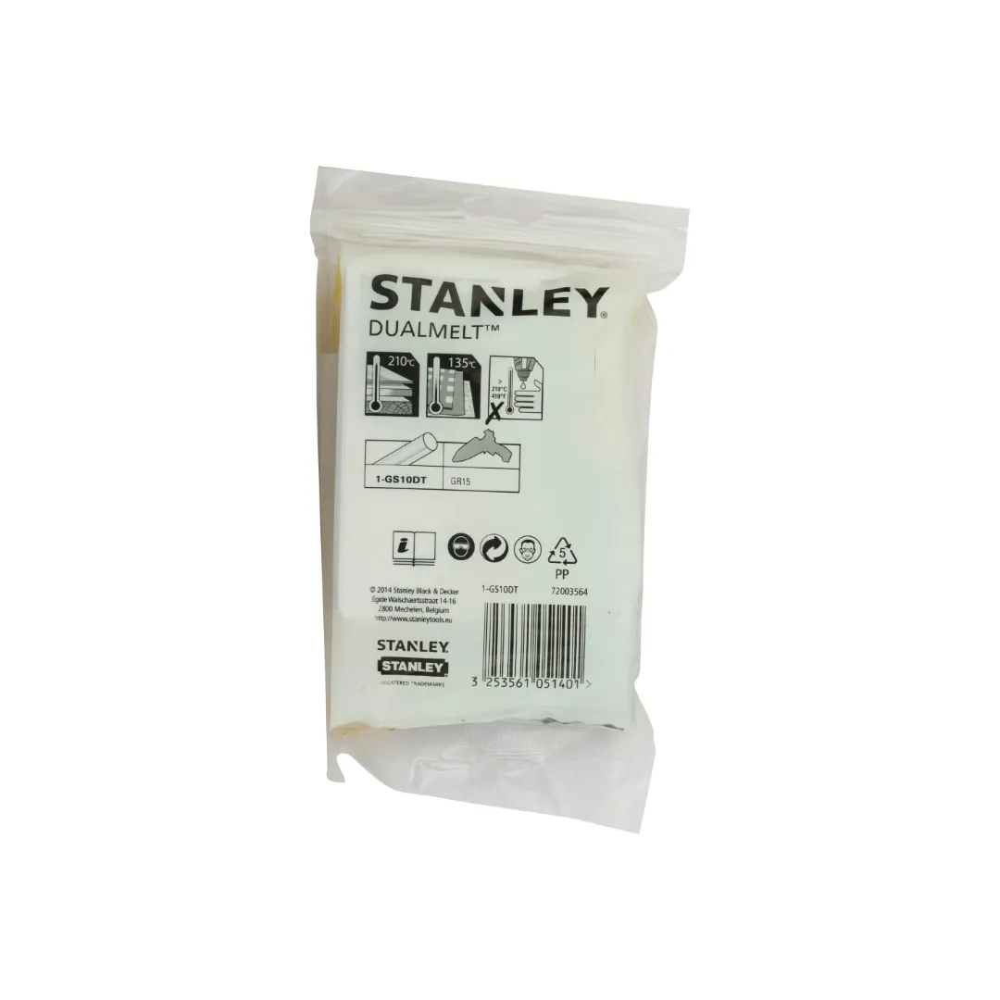

1-GS10DT


The STANLEY DualMelt 7mm Glue Sticks (24 Pack) are a versatile and efficient solution for a variety of bonding needs. Designed to work with heat-sensitive materials and general applications, these glue sticks provide fast, reliable results in just 25-30 seconds.
Key Features:
Whether you're tackling craft projects, repairs, or professional tasks, the STANLEY DualMelt Glue Sticks deliver dependable performance and exceptional bonding strength.
| Rating | Semi-Industrial |
| Glue Stick Diameter | 7 mm |
| Glue Stick Length | 100 mm |
| Number of Pieces | 24 |